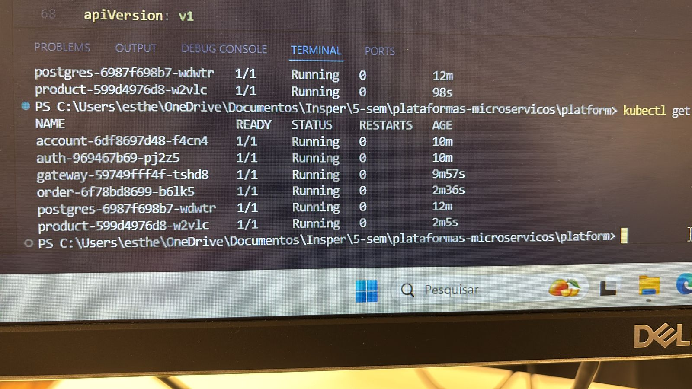

Roteiro 5 — Deploy com Kubernetes
Desenvolvedora
- Esther Cunha
✅ Por que usar Kubernetes?
O Kubernetes é uma plataforma de orquestração de containers que automatiza o deployment, escalonamento e gerenciamento de aplicações containerizadas. Ele permite que microserviços sejam executados de forma padronizada, resiliente e escalável.
Utilizar Kubernetes é uma prática essencial em ambientes modernos de produção, pois:
- Garante alta disponibilidade das aplicações.
- Facilita o gerenciamento e monitoramento dos serviços.
- Permite automação de deploys e rollback.
- Suporta diferentes ambientes (local com Minikube, ou em nuvem: AWS EKS, GCP GKE, Azure AKS).
Descrição da Atividade
Foi realizado o deploy dos microserviços em um cluster Kubernetes local utilizando Minikube. Todos os microserviços foram publicados no mesmo cluster, com seus respectivos arquivos de configuração.
Cada microserviço possui seu próprio diretório de configuração k8s/ com o arquivo k8s.yaml, contendo os seguintes recursos:
SecretConfigMapDeploymentService
Microserviços configurados:
account-serviceauth-servicegateway-serviceproduct-serviceorder-service
✅ Estrutura de Diretórios
📠api/
├── 📁 account-service/
│ └── 📠k8s/
│ └── 📄 k8s.yaml
├── 📁 auth-service/
│ └── 📠k8s/
│ └── 📄 k8s.yaml
├── 📁 gateway-service/
│ └── 📠k8s/
│ └── 📄 k8s.yaml
├── 📁 product-service/
│ └── 📠k8s/
│ └── 📄 k8s.yaml
└── 📁 order-service/
└── 📁 k8s/
└── 📄 k8s.yaml
✅ Exemplo de Arquivo k8s.yaml
apiVersion: apps/v1
kind: Deployment
metadata:
name: product
spec:
replicas: 1
selector:
matchLabels:
app: product
template:
metadata:
labels:
app: product
spec:
containers:
- name: product
image: 'esthercaroline/product:latest'
imagePullPolicy: IfNotPresent
ports:
- containerPort: 8080
env:
- name: DATABASE_HOST
valueFrom:
configMapKeyRef:
name: postgres-configmap
key: POSTGRES_HOST
- name: DATABASE_USER
valueFrom:
secretKeyRef:
name: postgres-secrets
key: POSTGRES_USER
- name: DATABASE_PASSWORD
valueFrom:
secretKeyRef:
name: postgres-secrets
key: POSTGRES_PASSWORD
---
apiVersion: v1
kind: Service
metadata:
name: product
labels:
app: product
spec:
type: ClusterIP
ports:
- port: 8080
selector:
app: product
Verificando os serviços rodando
Após aplicar os manifests com kubectl apply -f k8s.yaml, foi utilizado o comando:
kubectl get pods
kubectl get services
Esses comandos confirmam que os serviços estão rodando no mesmo cluster.
Kubernetes rodando
Exemplo:

Conclusão
Com o Kubernetes configurado corretamente, todos os microserviços funcionam de forma isolada, escalável e resiliente. A separação por Deployment, Service, Secrets e ConfigMap garante clareza e manutenibilidade, além de facilitar o deploy tanto em ambiente local quanto em nuvem.